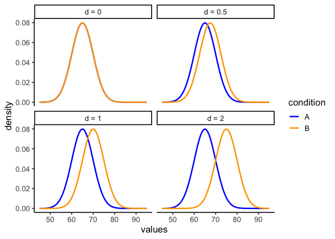
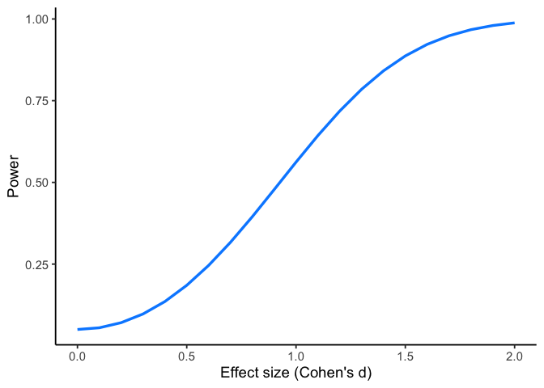
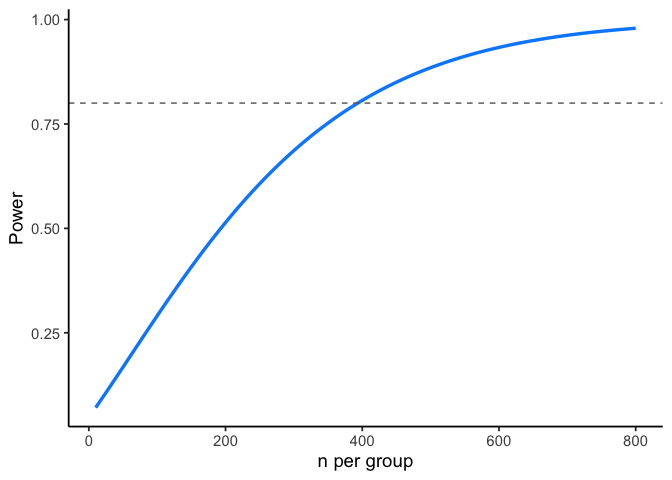
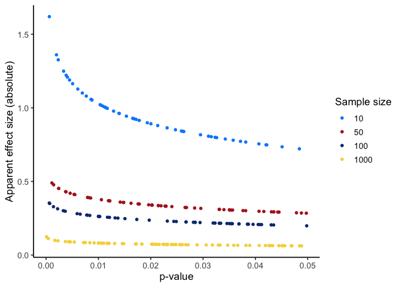

![Animation. A blue dot-dash bell curve centered on a magenta dashed line labeled mu sub 0, with red critical-value lines and shaded tails, appears first. A dark-green dot-dash curve of the same width is added, centered on a lime-green dotted line labeled x-bar, with a confidence interval bar underneath and an arrow showing the distance between mu sub 0 and x-bar in standard errors. The green curve slides right in steps from 0.8 to 2.4 standard errors; a gray Fail to reject box turns into a red Reject box once the distance passes 1.96.](imgs/gifs/ch5_recap.gif)
5 Errors, Power, and Effect Size
It is better to be roughly right than precisely wrong.
Attributed to John Maynard Keynes
Chapter 4 ended with a hypothesis test that either rejects \(H_0\) or fails to reject it.
This chapter first asks how often that decision is wrong, and in which direction. It then asks how large the effect is and whether the study had enough data to detect it. It closes with how to report a result.
5.1 Errors in hypothesis testing
Sometimes, even when we apply the test correctly, sampling variability can lead us to the wrong conclusion.
Type I error (\(\alpha\)): Rejecting \(H_0\) when it is actually true. This is like a smoke alarm going off when there’s no fire: a false alarm. By convention, \(\alpha\) is often set at 0.05 (5%).
Type II error (\(\beta\)): Failing to reject \(H_0\) when it is actually false. This is like a smoke alarm staying silent when there is a fire: a missed signal.
| Decision | If the null hypothesis is True | If the null hypothesis is False |
|---|---|---|
| Reject \(H_0\) | Type I error (prob = \(\alpha\)) | Correct (prob = 1 - \(\beta\)) |
| Fail to reject \(H_0\) | Correct (prob = 1 - \(\alpha\)) | Type II error (prob = \(\beta\)) |
For a fixed sample size and effect size, lowering \(\alpha\) raises \(\beta\), because a stricter standard for rejecting \(H_0\) makes it easier to miss a real difference.
Figure 5.1 recaps the test from Chapter 4. The distance between the two sampling distributions, in standard errors, decides whether we reject \(H_0\).
- In Figure 5.2, the true population mean (orange) is the same as \(\mu_0\). By chance, however, the sample mean lands far away, and the CI excludes \(\mu_0\). The test rejects \(H_0\) even though it is true: a Type I error.
![A blue dot-dash bell curve centered on a magenta dashed line labeled mu sub 0, with red critical-value lines and shaded tails. A solid orange line labeled mu sits exactly on the magenta line, and a wide, low orange bell curve is centered there too. A dark-green dot-dash bell curve of the same width as the blue one sits to the right, centered on a thick lime-green dotted line labeled x-bar that lies just past the right critical value. The thick dark-green confidence interval bar under it starts just to the right of mu sub 0, so it excludes mu sub 0.](05-Hypothesis_Testing_files/figure-html/fig-5key.type1_error-1.png)
- In Figure 5.3, the true population mean (orange) is far from \(\mu_0\), but the particular sample looks close to \(\mu_0\). The CI includes \(\mu_0\), so the test fails to reject when it should reject the null: a Type II error.
![A blue dot-dash bell curve centered on a magenta dashed line labeled mu sub 0, with red critical-value lines and shaded tails. Well to the right, a solid orange line labeled mu marks the center of a wide, low orange bell curve. A dark-green dot-dash bell curve of the same width as the blue one sits between them, centered on a thick lime-green dotted line labeled x-bar that lies inside the right critical value. The thick dark-green confidence interval bar under it reaches back past mu sub 0, so it includes mu sub 0.](05-Hypothesis_Testing_files/figure-html/fig-5key.type2_error-1.png)
Those two figures show what a wrong conclusion looks like for one unlucky sample. They do not show how often it happens. The green curve in them is built from that one sample, centered on its \(\bar{x}\). To see how often an error happens, center the sampling distribution on a possible truth instead. That shows where the sample mean lands across all the samples we could have drawn.
Figure 5.4 does that. The blue curve is the sampling distribution of the sample mean under \(H_0\), the one that sets the critical values. The orange curve is the sampling distribution of the sample mean if \(\mu = \mu_a\). Chapter 4 drew the possible true populations under \(H_a\) as a family of curves on either side of \(\mu_0\), and \(\mu_a\) is the center of one of them. Because we never know the true \(\mu\), we choose a value for \(\mu_a\) and ask how the test would perform if that value were true. The farther \(\mu_a\) is from \(\mu_0\), the less likely the test is to miss the difference.
- \(\alpha\) is the red area in the tails of the blue curve, past the critical values. If \(H_0\) is true, that is how often the sample mean lands in the rejection region anyway.
- \(\beta\) is the gray area under the orange curve between the critical values. If \(\mu = \mu_a\), that is how often the sample mean fails to reach the rejection region and a real difference goes undetected.
- Power, \(1-\beta\), is the rest of the orange curve, the part past the critical values.
![Two stacked panels sharing the same axes. The top panel shows a single blue dot-dash bell curve centered at the null mean, marked with a magenta dashed vertical line labeled mu sub 0, with red vertical lines labeled minus crit and plus crit at the critical values on either side and small red shaded tails beyond them, each labeled alpha over two. The bottom panel repeats that curve and adds an orange dot-dash bell curve of the same width centered well to the right. The region under the orange curve lying between the two critical-value lines is shaded gray and labeled beta, while the part of the orange curve past the right critical line is shaded orange and labeled power.](05-Hypothesis_Testing_files/figure-html/fig-5alpha-beta-1.png)
In Figure 5.4, \(\mu_a\) is 2.5 standard errors above \(\mu_0\), which leaves \(\beta = 0.29\) and power \(= 0.71\). This design misses a real difference of that size in almost three tries out of ten. Slide the orange curve further right, meaning a larger real difference, and the gray area shrinks. Move the red lines outward, meaning a smaller \(\alpha\), and the gray area grows.
5.1.1 Effect of sample size on errors
Sample size mainly affects Type II error. With a fixed \(\alpha\) and correct assumptions, the long-run Type I error rate is \(\alpha\) for any \(n\). With small \(n\), the sampling distribution is wide, true effects are harder to detect, and \(\beta\) increases (power decreases). As \(n\) grows, the sampling distribution tightens, \(\beta\) falls, and power rises. Apparent changes in the Type I rate at small \(n\) usually reflect assumption violations (e.g., non-normality, poor variance estimates, multiple looks), not \(n\) itself.
Figure 5.5 shows this with the same \(\mu_0\), the same true \(\mu\), and the same unlucky sample, in which \(\bar{x}\) lands 2.5 standard errors below \(\mu\). With the smaller sample, the confidence interval still catches \(\mu_0\) and we fail to reject. With four times the sample, the standard error halves, the interval clears \(\mu_0\), and we reject \(H_0\).
![Two stacked panels on the same axes. Both show a blue dot-dash curve centered on a magenta dashed line labeled mu sub 0 with red critical lines, a wide orange curve centered on an orange line labeled mu well to the right, and a dark-green dot-dash curve centered on a lime-green dotted line labeled x-bar between them, with a dark-green confidence interval bar underneath. Top panel: the blue and green curves are wide and short, the interval bar reaches back past mu sub 0, and a gray box reads Fail to reject. Bottom panel: the blue and green curves are half as wide and twice as tall, x-bar sits closer to mu, the interval bar ends well to the right of mu sub 0, and a red box reads Reject. The orange curve is the same in both panels.](05-Hypothesis_Testing_files/figure-html/fig-5type2-samplesize-1.png)
Choosing the tail after seeing the data. Chapter 4 said to choose the tail before you see the data, because picking it afterward makes you reject more often than your stated \(\alpha\) implies. A one-tailed test at \(\alpha = .05\) puts the whole 5% in one tail, so if you pick the tail after seeing which way the data went, you have effectively run a two-tailed test at \(\alpha = .10\) and doubled your Type I error rate. A one-tailed test with its direction chosen in advance keeps the Type I error rate at \(\alpha\).
5.1.2 How to interpret \(p\)-values
A \(p\)-value is the probability, assuming \(H_0\) is true, of obtaining a test statistic at least as extreme as the one we observed. We reject at level \(\alpha\) when \(p<\alpha\).
Tails. Count only the tail or tails that \(H_a\) points to: both tails for a two-tailed test, one tail for a one-tailed test.
CautionWarning: Common mistakes to avoid
- \(p\) is not the probability that \(H_0\) is true.
- A tiny \(p\) is not “super significant.” It means only that the data would be very unlikely if \(H_0\) were true. The effect itself can still be tiny and not worth acting on, especially with a large \(n\). Report an effect size and a CI so a reader can judge whether it matters.
- With small \(n\), true effects can yield large \(p\) (low power).
5.2 Beyond the 0.05 cutoff
People who act on a result, such as scientists, managers, and policymakers, need to know how large an effect is and how likely the study was to detect it. A decision at \(\alpha = 0.05\) answers neither question. Effect size and power answer them.
Working definitions
Statistical significance: the result is unlikely under \(H_0\), at your chosen \(\alpha\).
Practical significance: the effect is large enough to change what someone does about it. This is a judgment about the world, not a calculation. With a large enough \(n\), a result can be statistically significant and practically trivial. With too small an \(n\), a result can be practically important and still not statistically significant.
Effect size: how large the effect is, in the study’s units or in standard deviations.
Power (\(1-\beta\)): the probability your design will detect a real effect of a specified size at your chosen \(\alpha\).
Plan effect size and power before you sample. Decide what effect is meaningful for your context (e.g., a 0.3 mg/L nitrate reduction) and size your study to have adequate power to detect that effect.
5.3 Effect size
Effect size comes in two kinds of units. You can express it in original units, which carry practical meaning, or in standardized units, which let you compare across scales.
Practical (original units). Use the scale stakeholders recognize.
- Exams: “Treatment improved scores by 5 percentage points” (a letter-grade-sized change).
- Time-on-task: “New training reduces practice time by 1,000 hours out of 10,000” (a 10% reduction).
These statements are easy to interpret, but they are hard to compare across contexts or measures.
Standardized (unitless). When units are unfamiliar or scales differ, standardize by typical variability. The most common standardized effect size metric is Cohen’s d (Cohen 1988). It divides the raw difference, \(\Delta\), by the population standard deviation:
\[d = \frac{\Delta}{\sigma}\]
\(\Delta\) is \(\mu_1 - \mu_2\) when comparing two groups, or \(\mu - \mu_0\) when testing one mean against a reference value. Now “how big?” is expressed in SD units.
\(d\) has the same numerator as \(z\) but a different denominator. Chapter 4 gave the general shape, effect over error, and filled it in with the \(z\):
\[z = \frac{\bar{x}-\mu_0}{\sigma/\sqrt{n}} \qquad \text{versus} \qquad d = \frac{\mu_1-\mu_2}{\sigma}\]
Both numerators are the effect. The test statistic divides by the standard error, which shrinks as \(n\) grows, so \(z\) gets larger with more data even when the effect stays exactly the same. Cohen’s \(d\) divides by the standard deviation, which does not shrink with \(n\), so \(d\) reports the size of the effect itself.
A large test statistic therefore does not mean a large effect, and the two numbers answer different questions. With enough data, a trivial difference can produce a \(z\) as large as you like, while \(d\) stays small. The \(t\) in Chapter 6 is the same ratio with an estimated \(s\) in place of a known \(\sigma\), so the same holds for \(t\).
Environmental example (biodiversity index). Suppose an index increases from 3 to 4 after reforestation.
In raw units: +1 index point.
In standardized terms:
- If the SD across sites is 1.0, then \(d = 1.0\): a large shift.
- If the SD is 10, then \(d = 0.10\): a small shift.
Planning uses \(\Delta\). To plan a study, \(\Delta\) is enough: it is the size of the effect you expect to see, in the units of the study, and there is no need to standardize it. Cohen’s \(d\) standardizes it so that effect sizes can be compared across studies.
Notes for practice
- In real data, \(\sigma\) is unknown; estimate it (pooled SD for two groups, with small-sample corrections as needed).
- Heuristics (context matters): \(d \approx 0.2\) (small), \(d \approx 0.5\) (medium), \(d \approx 0.8\) (large).
- A “small” \(d\) can still be important (e.g., small reductions in lead or \(\mathrm{PM}_{2.5}\) can matter for health).
- Report a 95% CI with each effect size to show how precisely it was estimated.
Suppose we’re measuring final exam performance (percent correct). The class mean is 65% with a standard deviation of 5%. Group A is a control, while Group B receives some instructional treatment.
Figure 5.6 shows four possible scenarios:

- Panel 1 (\(d=0\)). No effect. Both groups sample from the same distribution (mean = 65).
- Panel 2 (\(d=0.5\)). Group B’s mean shifts upward by 2.5 points (67.5).
- Panel 3 (\(d=1\)). A 5-point shift (70).
- Panel 4 (\(d=2\)). A large 10-point shift (75).
In Figure 5.6, a half-SD shift (\(d = 0.5\), 2.5 points) leaves the two curves mostly overlapping, and a two-SD shift (\(d = 2\), 10 points) separates them. In practice, we rarely know beforehand how big a shift to expect.
5.4 Power
Effects vary in size, and study designs vary in how reliably they detect an effect of a given size. That reliability is the design’s statistical power. A design with low power will usually fail to reject \(H_0\) even when a real effect exists.
Power rises when:
- Effect size is larger.
- Sample size (\(n\)) is larger (smaller \(SE\)).
- The test is less conservative (larger \(\alpha\)).
- Measurement noise is lower (smaller \(SD\)).
For planning, the practical question is how large \(n\) must be to reach 80% power, with \(\alpha\) fixed at 0.05, for the smallest effect that matters. Figure 5.8 answers that question for one effect size.
5.4.1 Simulation walkthrough
Let’s see how design choices affect power with a simple simulation. We simulate two groups of \(n=10\) each. We draw Group A (control) from a normal distribution with mean 10 and \(SD = 5\), and Group B (treatment) from one with mean 12.5, a shift of 2.5 points, or Cohen’s \(d=0.5\), a medium effect.
If we simulate this experiment 1,000 times and run an independent-samples \(t\)-test each time, how often do we reject \(H_0\) at \(\alpha=0.05\)?
set.seed(2025)
p <- numeric(1000)
for(i in 1:1000){
A <- rnorm(10, 10, 5)
B <- rnorm(10, 12.5, 5)
p[i] <- t.test(A,B,var.equal=TRUE)$p.value
}
power_n10 <- mean(p < 0.05)The proportion of simulated experiments that reject \(H_0\) estimates the design’s power, the probability that the test detects a real difference of this size. Here it is about 21%. With \(n = 10\) per group, the test misses this medium-sized effect in most experiments.
5.4.2 How power changes
- Larger \(n\). Doubling to \(n=20\) per group reduces sampling error:
p <- numeric(1000)
for(i in 1:1000){
A <- rnorm(20, 10, 5)
B <- rnorm(20, 12.5, 5)
p[i] <- t.test(A,B,var.equal=TRUE)$p.value
}
power_n20 <- mean(p < 0.05)That increases power to about 33%, roughly double what \(n=10\) gave.
- Smaller \(\alpha\). Making the test more conservative (e.g., \(\alpha=0.01\)) lowers power, because fewer outcomes count as “significant”. Using the same \(n=20\) simulations, we just change the cutoff:
power_n20_strict <- mean(p < 0.01)Power falls to about 12%.
- Larger effect. If the treatment produces a big shift (say 2 standard deviations), the same design at the same \(\alpha=0.01\) has near-perfect power:
p <- numeric(1000)
for(i in 1:1000){
A <- rnorm(20, 10, 5)
B <- rnorm(20, 20, 5) # 2SD effect
p[i] <- t.test(A,B,var.equal=TRUE)$p.value
}
power_big <- mean(p < 0.01)Power is now about 100%. A 2-SD difference is detected in almost every experiment, even with 20 samples per group and \(\alpha = 0.01\).
5.4.3 Power curves
A design’s power depends on how large the true effect is. A power curve plots the power of one fixed design against a range of effect sizes. Figure 5.7 fixes the design at a two-sample \(t\)-test with \(n=10\) per group and \(\alpha=0.05\), and plots power against the true effect size, Cohen’s \(d\).

With 10 per group, this design detects a medium effect (\(d=0.5\)) only about 18% of the time, a larger effect (\(d=0.8\)) about 40% of the time, and a very large effect (\(d=2\)) almost every time (about 99%). With \(n = 10\) per group, only large effects are detected reliably.
The simulation above estimated power at \(d = 0.5\) as about 21%. The two numbers differ because 1,000 simulated experiments give an estimate, while the curve is computed exactly.
The second curve holds the effect size fixed and varies the sample size. Suppose prior research suggests the effect is small (\(d=0.2\)). Figure 5.8 plots power against sample size for \(d=0.2\), with a dashed line at 80% power, a common planning target.

At 10 per group, power to detect \(d=0.2\) is near zero. Reaching 80% power takes about 394 per group. At that sample size, 20% of studies would still fail to reject \(H_0\) for a real effect of \(d = 0.2\).
Power analysis is a planning tool. A power target such as 0.8 is calculated for a specific effect size and standard deviation, so report both with it.
5.4.4 Planning your design
Planning a study means working through the following, in order:
- Define a meaningful effect, \(\Delta\): the smallest difference from \(\mu_0\) that would change what you do. State it in the units of the measurement.
- Choose \(\alpha\) (often 0.05; justify if different).
- Estimate variability, \(\sigma\) (pilot data, literature, or historical monitoring). With \(\Delta\) and \(\sigma\) you have \(d\), which is what a power calculation needs.
- Compute \(n\) for \(\ge 80\%\) power (or explain tradeoffs if you can’t reach it).
- Pre-specify one- vs two-tailed before data collection.
This sequence is a formal power analysis. It applies when you are about to collect data and can still choose \(n\), for example when deciding how many plots to establish or how many samples a permit application commits you to. When the data already exist, as in your course project, \(n\) is fixed. Report the effect and its confidence interval instead.
CautionWarning: Post-hoc power
Do not compute power after the fact for the effect you observed. This post-hoc power is a restatement of the \(p\)-value, so a non-significant result always has low post-hoc power. Power for a difference chosen in advance, such as the smallest effect that matters, is fine to report.
With 10 per group, only effects near \(d = 2\) are detected reliably, and detecting \(d = 0.2\) with 80% power takes about 394 per group. Plan the design so it can reliably detect the effects it is meant to measure.
5.4.5 Two cautions
A significant result from a low-power study is less trustworthy. Underpowered studies rarely replicate. A design with only 30% power to detect an expected effect might produce a significant result by luck, but most replications will not. When a small study does reach significance by chance, its estimated effect size tends to be large, which makes the false positive look convincing.
Huge \(n\) finds tiny effects. With very large samples, trivial differences can register as statistically significant. For example, a satellite image can contain millions of pixels, so a difference of a fraction of a percent in greenness between two land-cover types can come out statistically significant, even though a difference that small would not change how either land cover is managed. Report an effect size and a confidence interval alongside each \(p\)-value so a reader can judge whether a difference matters.
Figure 5.9 shows the first caution. When the null hypothesis is true, 5% of tests still give \(p < 0.05\). In small samples, those false positives come with large estimated effect sizes, even though the true effect is zero.

5.5 Reporting results
A results statement is one sentence that states the finding in plain language and ends with the key statistics, in a fixed order, in parentheses.
Template (two-sided test): Plain-language finding. (test, statistic, df or n, value of statistic, p-value, effect size/CI if relevant).
What to include (in order):
- Test name (e.g., one-sample z, two-sample t, χ², regression).
- Test statistic and its degrees of freedom (or sample size for z).
- Exact \(p\) (report \(p<0.001\) when very small).
- An effect size and/or a 95% CI when available.
Examples
One-sample z. The average mercury level within 10 km of the smelter was higher than the legal limit (z = 2.85, n = 32, p = 0.004).
One-sample t with CI. Mean nitrate exceeded the target by 0.41 mg/L (t(31) = 2.6, p = 0.013, 95% CI [0.09, 0.73] mg/L).
Two-sample t with effect size. Downstream sites had higher turbidity than upstream sites (t(58) = 3.1, p = 0.003, Cohen’s d = 0.80).
Not significant (be explicit). Mean canopy temperature did not differ from the baseline (t(47) = 1.2, p = 0.24); we fail to reject \(H_0\).
Rounding & style
- Round statistics to 2 decimals; \(p\) to 3 decimals (use \(p<0.001\) when needed).
- Use “fail to reject \(H_0\)” (not “accept”).
- Match tail to hypothesis in prose (e.g., “higher than,” “lower than,” or “different from”).
Do / Don’t
- Do pair the sentence with a short, substantive takeaway (what it means for the question).
- Do include a CI or effect size when it aids interpretation.
- Don’t restate methods; don’t claim proof; don’t omit units.
5.6 Chapter Summary
Why it matters. A hypothesis test ends in reject or fail to reject, and that decision can be wrong in two ways. Effect size tells you how large the difference is, and power tells you whether the study could have detected it.
Core ideas
- Two ways to be wrong. A Type I error rejects a true \(H_0\), at a rate you set with \(\alpha\). A Type II error fails to reject a false one. For a fixed design, lowering \(\alpha\) trades fewer Type I errors for more Type II errors. \(\alpha = .05\) is a widely used convention for where to make that trade.
- What a \(p\)-value measures. It is the probability of data at least as extreme as ours if \(H_0\) were true. It is not the probability that \(H_0\) is true, and it says nothing about how large an effect is.
- Significance and effect size answer different questions. A significant result says the data would be unlikely if \(H_0\) were true. With a large enough \(n\), a trivially small difference is significant. Report an effect size and a confidence interval next to every \(p\)-value so a reader can judge whether the result matters.
- Effect size in two kinds of units. The same difference can be written in original units, \(\Delta\), which carry practical meaning for the people who act on your result, or in standard deviations, Cohen’s \(d = \Delta/\sigma\), which makes results comparable across studies and scales. Report both when you can, and plan in \(\Delta\), because the smallest difference worth detecting is a judgment made in real units.
- Power is a design decision. Power depends on \(n\), effect size, \(\alpha\), and variability together. An underpowered study usually misses real effects, and when it does reach significance, the effect it reports tends to be too large. Run a power analysis before collecting data, while \(n\) can still be chosen.
- Report a result as a sentence. State the direction in words, then give the test, the statistic with its df or \(n\), the \(p\)-value, and an effect size or confidence interval. “Significant” on its own tells a reader nothing about direction, magnitude, or precision.